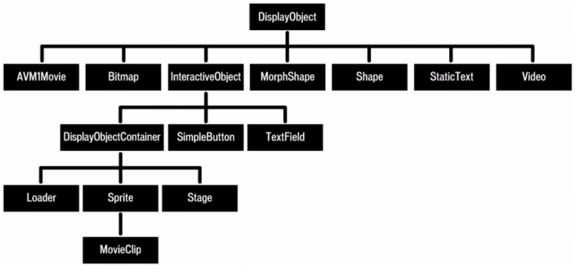

class: center, middle # Chapter 5. Inheritance, Polymorphism, abstract, interface --- # Review : Creature class ```csharp class Creature { public int Hp { get; set; } public int Damage { get; set; } public void Attack(Creature creature) { creature.Hp -= Damage; } public Creature() : this(100, 0) {} public Creature(int hp, int damage) { Hp = hp; Damage = damage; } } ``` --- # protected ```csharp class Creature { public int Hp { get; set; } public int Damage { get; set; } protected bool isFriendly; ... } ``` field, method, 혹은 property에 protected를 붙이면 다음과 같은 장소에서 접근할 수 있습니다. - 이 클래스 안 - 이 클래스를 상속받는 다른 클래스 안 이외에는 접근 불가. --- # public/private/protected <img src="protected-1.png" width="800"> --- # internal는 뭔가요? (거의 쓸 일이 없긴 하지만 설명하자면..) 다른 어셈블리에서 접근하지 못하도록 막는 키워드입니다. C# 어셈블리 : 컴파일이 되어 있는 코드 덩어리를 의미함 (보통 dll or exe) 보통 우리가 만드는 프로그램들은 하나의 어셈블리 안에 다 들어가 있으므로 걱정할 필요가 없다. (명시하지 않으면 알아서 internal로 인식한다) 라이브러리 만들때는 고려해야 할 지도... --- class: middle, center # Polymorphism --- # Review : Creature class ```csharp class Creature { public int Hp { get; set; } public int Damage { get; set; } public void Attack(Creature creature) { creature.Hp -= Damage; } public Creature() : this(100, 0) {} public Creature(int hp, int damage) { Hp = hp; Damage = damage; } } ``` --- # 상속된 클래스만의 특별한 메서드 ```csharp class Monster : Creature { public float DamageModifier { get; set; } public void Attack(Creature creature) { Random random = new Random(); if (random.Next(0, 5) == 0) creature.Hp -= Damage * (1 + damageModifier); else creature.Hp -= Damage; } public Monster() : this(100, 20, 0.1) {} public Monster(int hp, int damage, float damageModifier) : base(hp, damage) { DamageModifier = damageModifier; } } ``` --- # 하고 싶은 것 Base 클래스에 있던 Attack 함수를 Monster만의 특별한 것으로 바꾸고 싶다! 그래서 만약에... ```csharp Creature monster = new Monster(); Creature player = new Player(); monster.Attack(player); ``` Monster만의 어택이 실행됨! --- # virtual / override ```csharp class Creature { ... public virtual void Attack(Creature creature) { creature.Hp -= Damage; } ... } class Monster : Creature { ... public override void Attack(Creature creature) { Random random = new Random(); if (r.Next(0, 5) == 0) creature.Hp -= Damage * (1 + damageModifier); else creature.Hp -= Damage; } } ``` --- # abstract 만약에 다음과 같은 클래스들이 있다고 합시다. ```csharp class SearchEngine { public virtual string[] Search(string findThis) { return ""; } } class GoogleSearchEngine : SearchEngine { public override string[] Search(string findThis) { return ... } } class NaverSearchEngine : SearchEngine { public override string[] Search(string findThis) { return ... } } ``` --- # 사실 생성할 일이 없는 베이스 클래스 SearchEngine 클래스는 그냥 서치 엔진을 나타내는 구조물로서, 아무런 기능을 가지고 있지 않은 추상적인 클래스입니다. 즉 ```csharp SearchEngine searchEngine = new SearchEngine(); ``` 같이 SearchEngine 오브젝트를 만들 일이 없습니다. --- # abstract class ```csharp abstract class SearchEngine { public abstract string[] Search(string findThis); } class GoogleSearchEngine : SearchEngine { public override string[] Search(string findThis) { // ... implement this } } class NaverSearchEngine : SearchEngine { public override string[] Search(string findThis); { // ... implement this } } ``` 메서드에 abstract를 붙여줄 수 있습니다. 다만 이렇게 하면 이 베이스 클래스를 상속받는 놈들은 무조건 이 abstract method를 구현해 주어야 합니다. --- class: center, middle # GameObject pattern --- # GameObject pattern ```csharp abstract class GameObject { public abstract void Update(); public abstract void Draw(); } class Monster : GameObject { public override void Update() {...} public override void Draw() {...} } class Player : GameObject { public override void Update() {...} public override void Draw() {...} } ... ``` --- # GameObject pattern ```csharp static void Main(string[] args) { GameObject[] gameObjects = new GameObject[3]; gameObjects[0] = new Monster(); gameObjects[1] = new Player(); gameObjects[2] = new Magician(); ... while(true) { if (timer.frameFinished) continue; foreach (var gm in gameObjects) { gm.Update(); gm.Draw(); } } } ``` --- class: middle, center # interface --- # 상속의 문제점 하나밖에 상속 못한다....  --- # 상속의 문제점 그런데 클래스들끼리 서로 비슷한 행동들을 하는 것을 볼 수 있다. ex) - Player : 걸을 수 있음, 공격할 수 있음 - Turret : 공격할 수 있음 - Airplane : 날 수 있음, 공격할 수 있음 - ShopOwner : 물건 판매할 수 있음, 걸을 수 있음 이런 것들은 단순한 상속 구조로는 표현할 수 없음. --- # interface 만들기 ```csharp interface IMoveable { float Speed { get; } void Move(Direction direction); } interface IAttackable { void Attack(Creature creature); } interface IFlyable { Vector3 Velocity { get; } void Fly(); } ``` --- # 유의사항 - 함수/프로퍼티 정의만 가지고 있을 수 있음. (변수 X, 함수는 구현할 수 없음) - C# 관습상 인터페이스 이름에는 "I"를 붙이는 것이 관례입니다. ```csharp interface IMoveable { void Move(Direction direction); } ``` --- # Example (주교재에 있음) ```csharp interface IFileWriter { string Extension { get; } void Write(string filename); } ``` --- # Implementing interfaces ```csharp class TextFileWriter : IFileWriter { public string Extension { get { return ".txt"; } } public void Write(string filename) { // Do your file writing here... } } class RtfFileWriter : IFileWriter { ... } class DocxFileWriter : IFileWriter { ... } ``` --- # Using interfaces ```csharp IFileWriter[] fileWriters = new IFileWriter[3]; fileWriters[0] = new TextFileWriter(); fileWriters[1] = new RtfFileWriter(); fileWriters[2] = new DocxFileWriter(); foreach(IFileWriter fileWriter in fileWriters) { fileWriter.Write("path/to/file" + fileWriter.Extension); } ``` --- # Multiple interfaces ```csharp class Airplane : GameObject, IFlyable, IAttackable { ... (implement IFlyable, IAttackable methods) ... } ``` --- class: center, middle # Composition vs. Inheritance --- # 그럼 끝. ## 모두 수고하셨습니다!